1. Introduction: Why AAP on OpenShift?
The Ansible Automation Platform Operator provides cloud-native, push-button deployment of new Ansible Automation Platform instances in your OpenShift environment. The Ansible Automation Platform Operator includes resource types to deploy and manage instances of automation controller and private automation hub. It also includes automation controller job resources for defining and launching jobs inside your automation controller deployments.
Deploying Ansible Automation Platform instances with a Kubernetes native operator offers several advantages over launching instances from a playbook deployed on Red Hat OpenShift Container Platform, including upgrades and full lifecycle support for your Red Hat Ansible Automation Platform deployments.
More information can be found on the official AAP on OpenShift documentation.
2: Viewing the AAP on OpenShift managed resources
The Ansible Automation Platform environment that you have been using thus far is running within your OpenShift cluster. Let’s click around the OpenShift Web Console and explore what’s already installed and configured by the operator.
2.1: The installed operator and CRDs
AAP has been installed in the aap Namespace using an Operator and the Operator Lifecycle Manager (OLM). The operator manages several Custom Resource Definitions (CRDs) that define the different components of Ansible Automation Platform.
-
Launch the OpenShift Web Console
-
Select the htpasswd_provider button and use the credentials provided in the Environment Details page to login to the OpenShift console.
-
Navigate to Operators → Installed Operators
-
From the Project dropdown, ensure
aapis selected -
The
Ansible Automation Platformoperator is listed and installed within this project.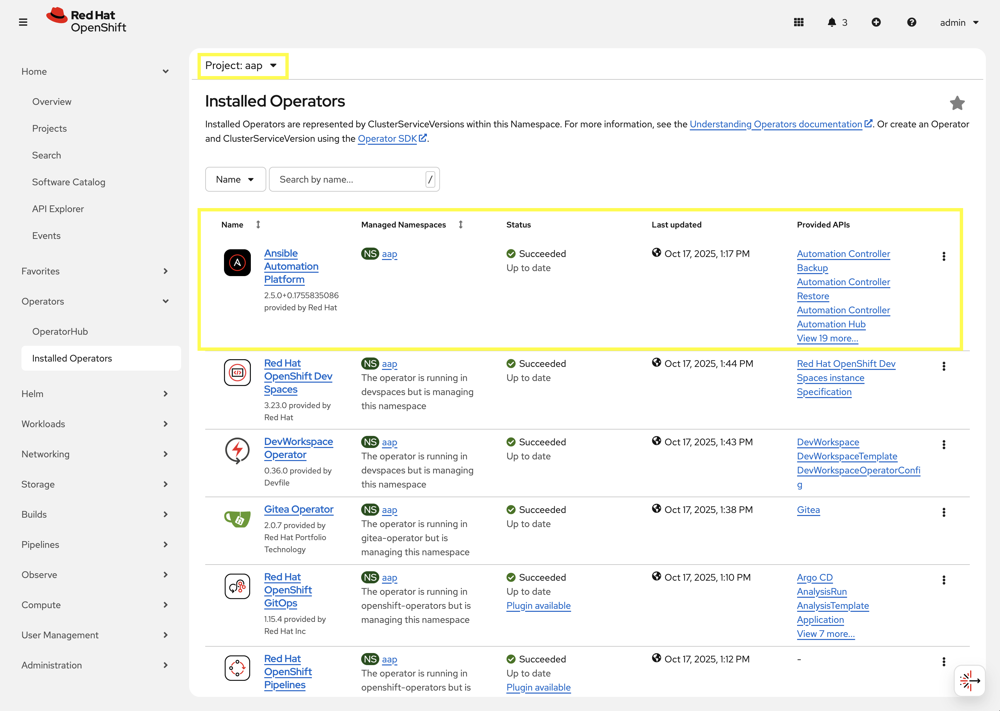
-
Click on the
Ansible Automation Platformoperator which will display all of the resources that are managed by the operator. -
In the top tab, click on
All Instances.
-
5 instances will be shown, each representing a Custom Resource Definitions (CRDs) managed by the AAP operator:
-
aapwhich is anAnsibleAutomationPlatformresources that relates to the Gateway component of AAP. -
aap-controllerwhich is anAnsibleControllerresource that relates to the Automation Controller component of AAP. -
aap-edawhich is anEDAthat relates to the Event-Driven Ansible component of AAP. -
aap-hubwhich is anAutomationHubresource that relates to the Automation Hub component of AAP. -
aap-lightspeedwhich is anAnsibleLightspeedresource that relates to the Ansible Lightspeed component of AAP.The AnsibleAutomationPlatformCRD deploys and manages the other CRDs listed above. This makes it simple to deploy all the components of AAP together. TheAnsibleAutomationPlatformCRD simply needs to be configured to let the operator know which components of the platform are desired, and how to deploy them, and the operator takes care of the details.
-
Click the aap instance to navigate to the Details page for the AnsibleAutomationPlatform CRD. On this page you can view some of the important resources managed by the AnsibleAutomationPlatform CRD. For instance, secrets, other CRDs, database configurations, etc.
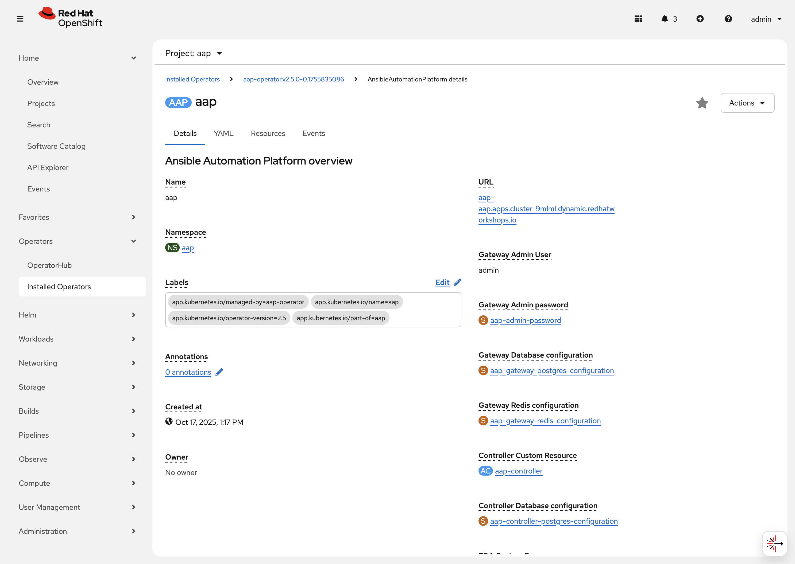
Next to the Details tab click on YAML. This will show you the current YAML specification that defines the CRD. The following depicts the spec key in the YAML definition:
controller:
disabled: false
eda:
disabled: false
hub:
content:
replicas: 1
disabled: false
file_storage_access_mode: ReadWriteMany
file_storage_size: 100Gi
file_storage_storage_class: ocs-external-storagecluster-cephfs
gunicorn_api_workers: 1
gunicorn_content_workers: 1
worker:
replicas: 1
image_pull_policy: IfNotPresent
lightspeed:
disabled: false
no_log: true
redis_mode: standalone
route_tls_termination_mechanism: EdgeThis spec definition shows us that the controller, eda, hub, and lightspeed components are enabled (disabled: false) and some customizations made to the hub component specifically.
2.2: Resources managed by the CRDs
Each CRD manages its own set of OpenShift resources that are needed for the component to integrate into the final AAP deployment.
2.2.1: Deployments
Each CRD will create and manage Deployment resources that in turn manage the pods and other resources listed below in section 2.2.1.
-
Navigate to Workloads on the left hand navigation → Deployments. You will see a list of created deployments, their pod counts, and other information.
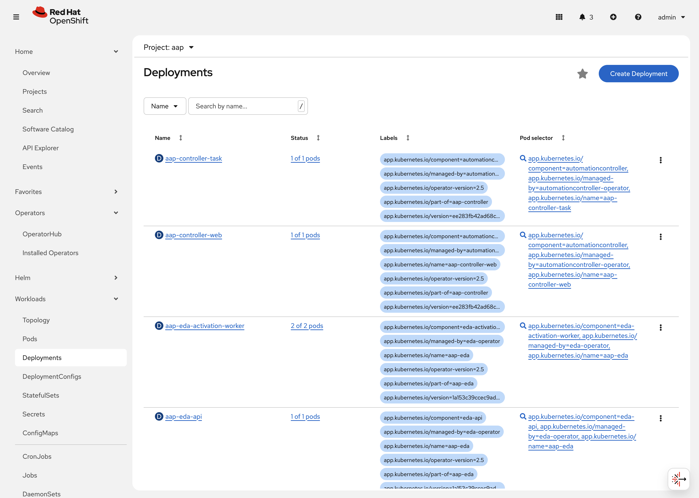
-
Click on aap-controller-task. Under the
Detailstab you can see information about the deployment resource such as its owner (Which CRD manages this deployment), associated containers, associated volumes, etc. Feel free to click on the other tabs to view information about the deployment and it’s associated metrics, YAML definition, pods, etc.

2.2.2: Pods
Many pods will be up and running that correlate to the containers running the application pieces of AAP. These pods are ultimately owned by the deployments viewed in the previous section.
-
Navigate to Workloads on the left hand navigation → Pods. You will see a long list of deployed pods and their status, restarts, etc.
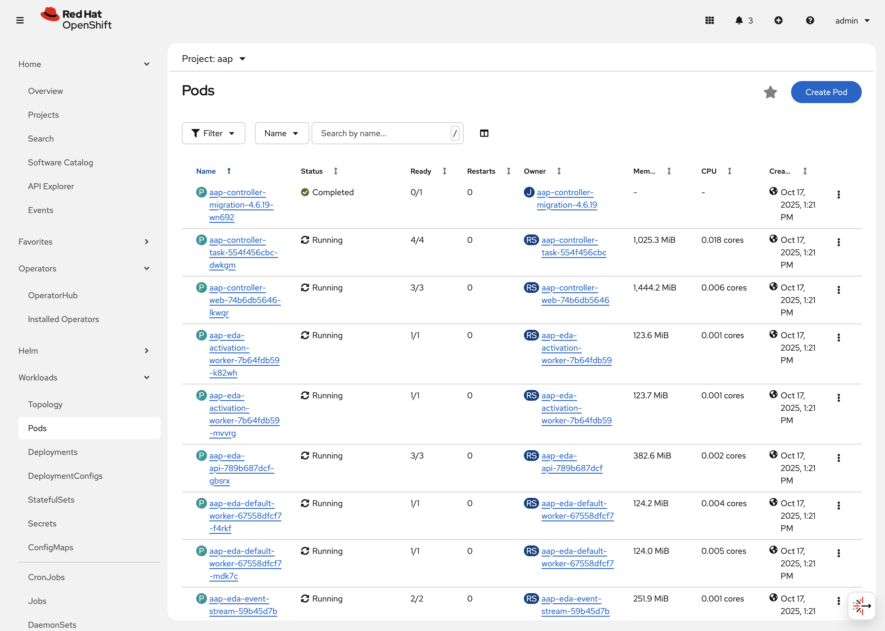
-
Click on aap-controller-task-<id>. Under the
Detailstab you can see information related to this pod such as containers, volumes, conditions, etc.
-
Next to the
Detailstab, click on the Logs tab. Under theContainersdrop down, make sure that theaap-controller-taskcontainer is selected. Observe how you can view the application logs related to theawx.main.tasksportion of the application. This may be important for troubleshooting while the application is having trouble launching or managing tasks!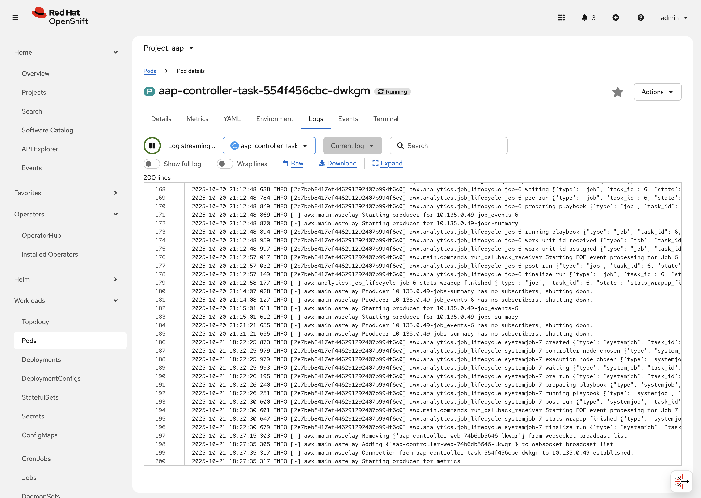
-
Under the
Containersdrop down, select the aap-controller-rsyslog container. Observe how you now see the logs pertaining to the logging of the application pod. If there are any issues with theawx-rsyslogdor external logging, you may see them here.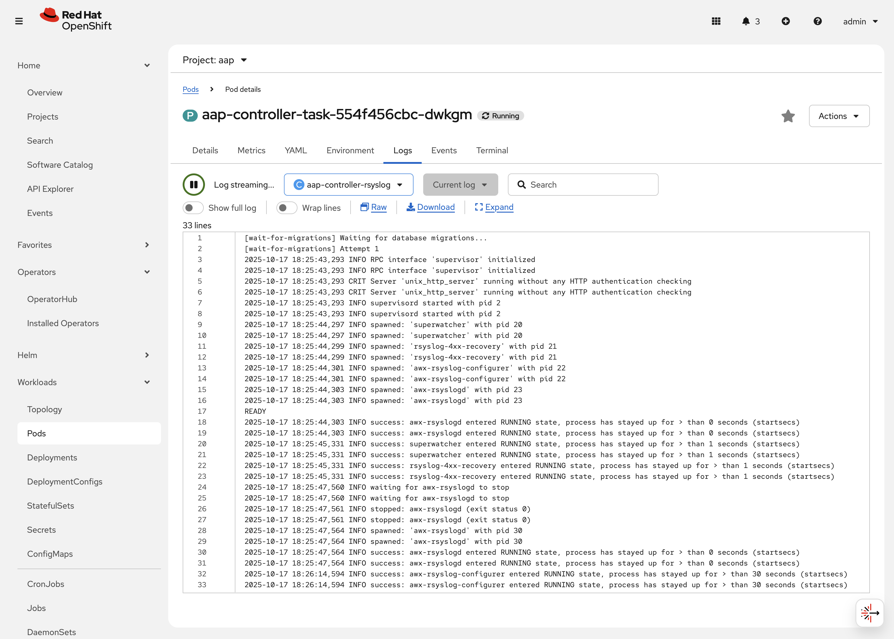
-
Next to the
Detailstab, click on the Terminal tab. Under theContainersdrop down, make sure that theaap-controller-taskcontainer is selected. You now have a direct terminal connection to the running container. Here you can view files, and interact with the running AWX application by running commands such asawx-manage. For example runawx-manage --help:Check AWX Manage Commandssh-4.4$ awx-manage --help Type 'awx-manage help <subcommand>' for help on a specific subcommand. Available subcommands: [auth] changepassword ...You could also get access to the container terminal using the ocCommand Line Interface viaoc rsh aap-controller-task-<id> -c aap-controller-taskas well.
Let’s do a similar exercise, but this time taking a look at the AAP web pods.
-
Navigate to Workloads on the left hand navigation → Pods.
-
Click on aap-controller-web-<id>
-
Next to the
Detailstab, click on the Logs tab. Under theContainersdrop down, make sure that theaap-controller-webcontainer is selected. Observe how you can view the application logs related to the AAP web API. This may be important for troubleshooting while the application is receiving web application requests. -
Next to the
Detailstab, click on the Terminal tab. Under theContainersdrop down, make sure that theaap-controller-webcontainer is selected. You now have a direct terminal connection to the running container. Just like in the task pod example before, here you can view files, and interact with the running AWX application by running commands such asawx-manage.
2.2.3: PersistentVolumeClaims
Some of the deployed components of the AAP operator may require persistent storage of data. Persistent Volume Claims (PVCs) are resources in OpenShift that enable access to persistent storage.
-
Navigate to Storage on the left hand navigation → PersistentVolumeClaims. Here you can view any PVCs and their status, associated PVs, capacity, etc.
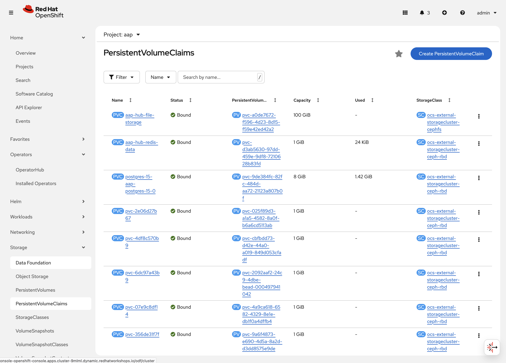
-
Click on aap-hub-file-storage. Under the details tab you can see more information about the PVC such as its storageClass, capacity, used capacity, access mode, etc.
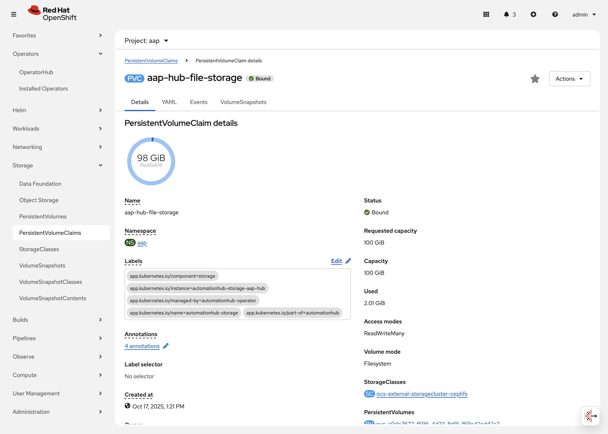
2.2.4: ConfigMaps
The AAP operator will create and manage ConfigMaps that are used by the application components for storing application settings.
Let’s view the ConfigMap that stores the nginx configuration used by the Automation Controller.
-
Navigate to Workloads on the left hand navigation → ConfigMaps. Here you can view all ConfigMaps and their size, etc.

-
Click on aap-controller-automationcontroller-configmap. Under
Detailswe can see information about the ConfigMap such as its owner and its data.
-
-
Under
Datatake a look at the different objects that belong to this particular ConfigMap. -
Look at the
nginx_confobject. this is the nginx configuration used for the Automation Controller application. -
Look at the
settingsobject, this is thesettings.pyfile for the Automation Controller application that is mounted at/etc/tower/settings.py.
The data for each ConfigMap is handled by the AAP operator. Any desired changes to these ConfigMaps should not be performed manually by editing the ConfigMaps. The operator may override any changes applied. If changes to the values of these ConfigMaps are desired, they should be applied by modifying the correct keys underneath the CRD spec.
|
2.2.5: Secrets
The AAP operator will create and manage sensitive values needed by the AAP application as Secrets. These can range from database configuration details, application login password, database encryption keys, application SSL certificates, and others.
For instance, when the AAP operator performs its initial deployment, by default. it will create a password for the admin user that can be used to login to the AAP platform once it’s fully deployed. Let’s take a look at it now.
-
Navigate to Workloads on the left hand navigation → Secrets. Here you can view any secrets and their type, size, etc.

-
Click on aap-admin-password. Under
Detailswe can see information about the secret and its data.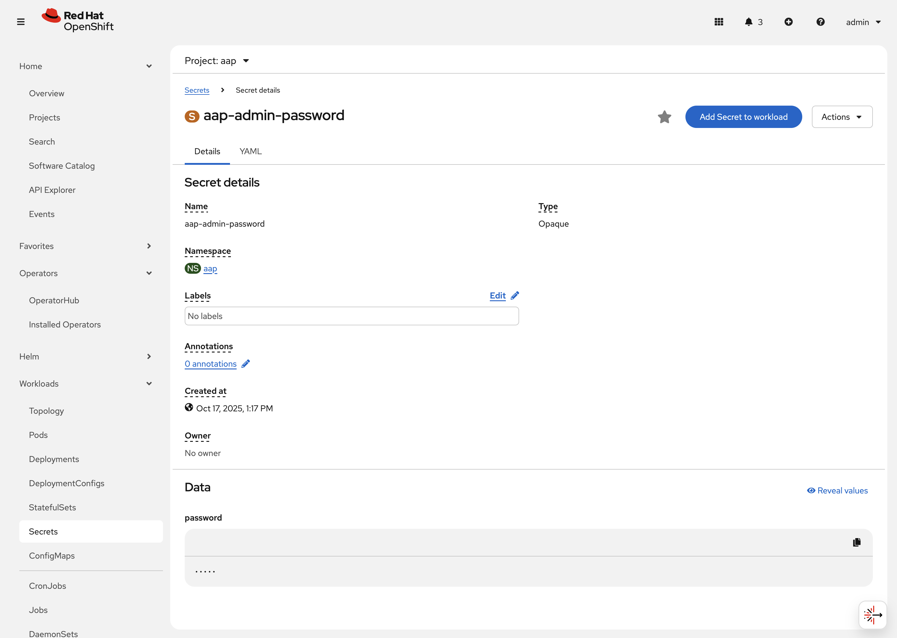
-
Under
Dataclick theReveal valuesbutton to show the hidden password. Go ahead and copy the password as it will be needed in the next section.
-
2.2.6: Routes
The AAP operator also handles creating the services needed for the application to route traffic internally among its components (Services), and the Routes needed for external access to the web application itself.
Let’s look at the routes that are created.
-
Navigate to Networking on the left hand navigation → Routes. Here you can view each created route and their status, location, etc.
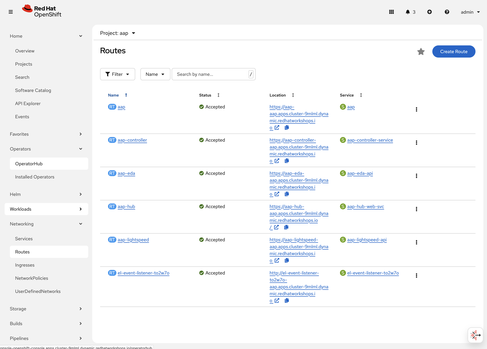
-
Click on
aap. UnderDetailswe can see information about the route and it’s service, certificates, wildcard policies, etc. This route happens to belong to the Gateway component of the AAP Deployment. This is the resource where all API requests get routed through and also where we can access the UI from.
-
Under
DetailsandLocation, you can see the externally accessible URL which we can use to access the deployed Ansible Automation Platform instance. Click on the link which should look something like {aap_controller_web_url}. A new browser tab should open which will be a login page to AAP. For user type inadminand for the password paste the value copied from theaap-admin-passwordsecret in the previous section.
-
2.3: Operator manager pods
Another aspect of the AAP operator are the controller manager pods. These pods are deployed via Operator Lifecycle Manager.
The purpose of these pods is to automate the process of installing, updating, and managing operators and their associated operands within an OpenShift cluster.
These pods are installed when the operator is installed.
There are two deployment strategies when installing the AAP operator.
-
Cluster scoped installation.
-
Namespace scoped installation.
2.3.1: Cluster scoped installation
With a cluster scoped installation, one set of operator controller manager pods are installed into a specific namespace on the OpenShift cluster.
These sets of pods are responsible for managing one or more sets of AAP deployments in separate namespaces.
In essence, this single set of operator controller manager pods watches all the namespaces on the cluster for any of the AAP CRDs as described in previously.
The benefit of this approach is a single set of operator controller manager pods can manage many AAP deployments on a single cluster, thus less resources are consumed by the operator manager controller pods.
The downside is that each deployed instance of AAP on the OpenShift cluster must be on the same AAP version.
2.3.2: Namespace scoped installation
With a namespace scoped installation, one or more sets of operator controller manager pods are installed into specific namespaces on the OpenShift cluster.
Each set of pods is responsible for managing only one AAP deployment in the same namespace into which the operator is installed.
In essence, there can be as many deployments of the operator controller manager pods each watching and managing a single namespace on the cluster.
The benefit of this approach is that each set of operator controller manager pods can be on separate AAP versions and thus, every AAP deployment can be on a separate version and lifecycle.
The downside is that each set of operator controller manager pods consumes resources and ultimately, this approach will consume more total resources when deploying many AAP deployments on a single OpenShift cluster.
2.3.3: What operator strategy does this workshop use?
The OpenShift workshop environment provided in this lab utilizes namespace scoped operator installations of the AAP operator. This approach allows the student to deploy another working AAP operator onto the same cluster as viewed in the previous section without mixing resources.
3. Deploy another AAP instance using the AAP Operator
Now that you’re familiar with different components that are managed by the AAP operator, let’s try to deploy another instance of AAP onto the same OpenShift cluster.
This will demonstrate the steps needed to deploy an instance of the AAP operator and how to make some customizations to the deployment.
3.1: Create a new namespace
First, create a new project in which the AAP operator can be installed into.
-
Navigate to Home on the left hand navigation → Projects.
-
Click on the Create Project button.
-
Fill out the name field with
my-aapand hit Create.
You are now redirected to the Project details page of the newly created project.

3.2: Install the operator
Now that we have a project to work within, install another instance of the AAP operator into this namespace.
-
Navigate to Operators on the left hand navigation → OperatorHub.
-
Underneath All Items use the
Filter by keyword…input and enteransible.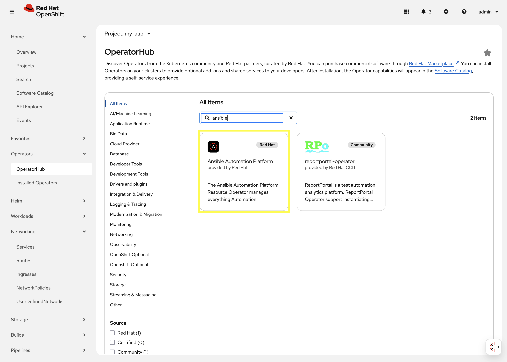
-
Click on the
Ansible Automation Platformbox shown. -
A dialog box with information about the operator will be shown. Feel free to read details and information about the operator.
-
Underneath Channel select stable-2.5.
-
Click the Install button.
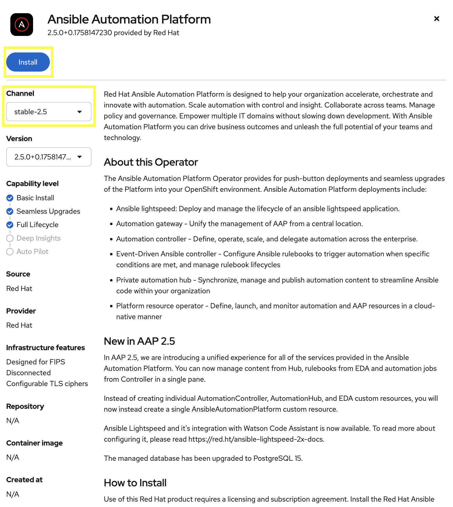
Another dialog box will be shown with more options.
-
The only change that needs to be made is under Installed Namespace select the Select a Namespace radio button. Ensure the namespace that was created in the previous step is shown in the dropdown:
my-aap. -
Click the Install button.
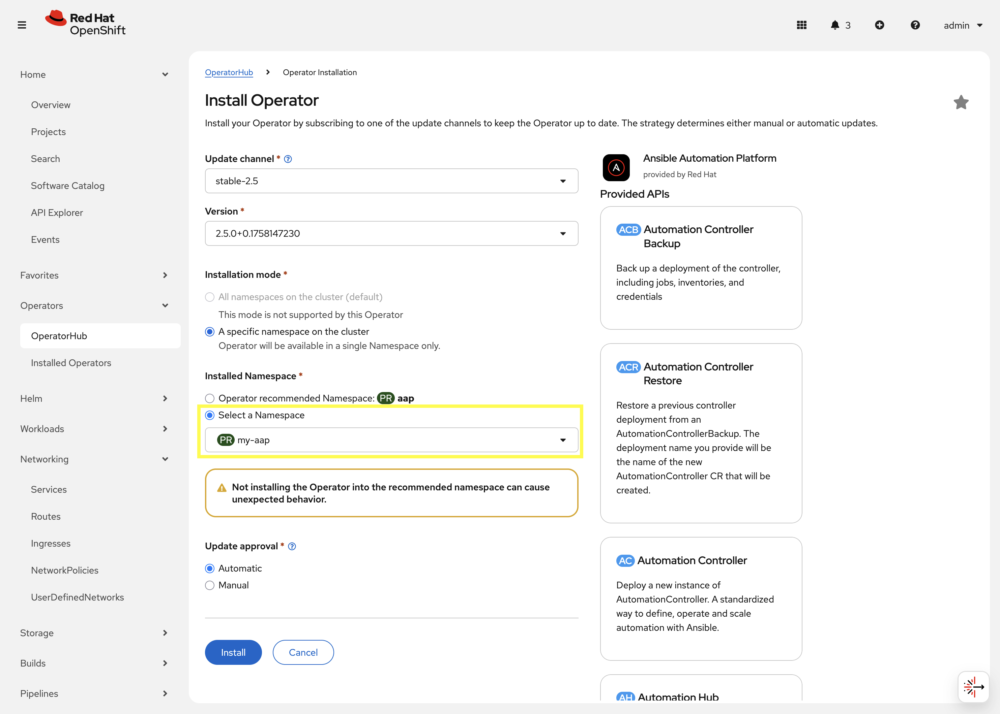
The operator will take moment to install itself into the selected namespace.
-
Navigate to Operators on the left hand navigation → Installed Operators.
-
Next to the
Project:dropdown in the top left, ensuremy-aapis the project shown.Under the list of installed operators you should now see
Ansible Automation Platformwith a version of2.5.+0.1…and a status ofSuccessful.
-
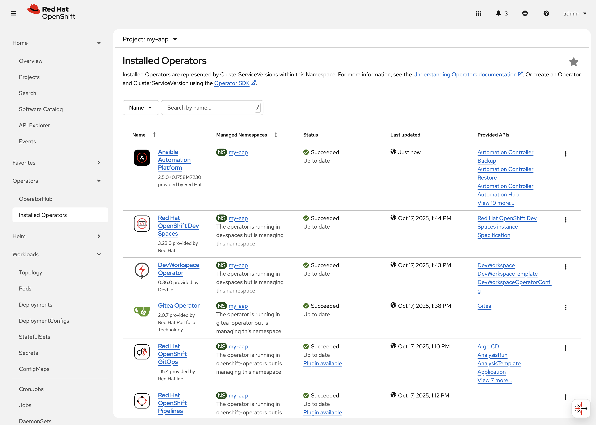
The operator is now successfully installed into the my-aap namespace using a namespace scoped installation method.
3.3: Create a custom admin secret
By default, the AAP operator will create a secret containing a random value for the initial admin password used to login to the deployed AAP instance.
Instead, we can customize the admin password for AAP by creating an OpenShift Secret and instructing the operator to use the value specified within that secret.
-
Navigate to Workloads on the left hand navigation → Secrets.
-
Click on the Create button and select Key/value secret.

-
For the Secret name, enter
my-aap-admin-secret. -
For the Key enter
password, this is the name of the key that the operator will look for in this secret and must be namedpassword. -
For value enter
supersecretor any other value of your choosing. -
Click the
Createbutton.

You are now redirected to the Secret details page of the newly created Secret. This Secret will be referenced in the following section.
3.4: Deploy the operator
Deploy a new instance of AAP using the operator.
-
Navigate to Operators on the left hand navigation → Installed Operators.
-
Next to the
Project:dropdown in the top left, ensuremy-aapis the project shown. -
Click on the
Ansible Automation Platformoperator. -
In the toolbar, click on
All instances. -
Click on the Create new button and select Ansible Automation Platform.

This will bring up the form view to customize the values of the Ansible Automation Platform deployment.
For this exercise, we’ll use the YAML view and paste a simple snippet in.
-
Click on the
YAML viewradio button. -
In the code entry field, paste the following YAML values:
Custom AAP DeploymentapiVersion: aap.ansible.com/v1alpha1 kind: AnsibleAutomationPlatform metadata: name: aap namespace: my-aap spec: admin_password_secret: my-aap-admin-secret image_pull_policy: IfNotPresent no_log: false redis_mode: standalone route_tls_termination_mechanism: Edge controller: disabled: false eda: disabled: true hub: disabled: true lightspeed: disabled: true -
Click the Create button.
The snippet above is a YAML definition of the AnsibleAutomationPlatform we want the operator to deploy. It specifies that the Gateway and Automation Controller components to be created, but disabling the deployment of Automation Hub, EDA, and Lightspeed.
Notice the value of namespace: my-aap in the snippet above is the name of our created project. In addition, notice admin_password_secret: my-aap-admin-secret specifies the Secret containing the admin password that should be used for the newly created instance.
|
The operator will now recognize the newly created AnsibleAutomationPlatform resource and begin creating and managing the components until the platform is fully deployed.
In the next section, we’ll take a look at different ways to monitor the progress of the actions the operator is performing.
3.5: Monitor the installation progress
There are several ways to monitor the progress of the AAP deployment:
-
You can track the logs of the operator manager pods for each component by looking at the
<component>-controller-operator-manager-<id>pod logs. -
Deployments, pods, secrets, etc will begin to be created. Feel free to monitor their individual progress.
-
Resources belonging to the custom resource begin to be populated under the
Resourcestab.
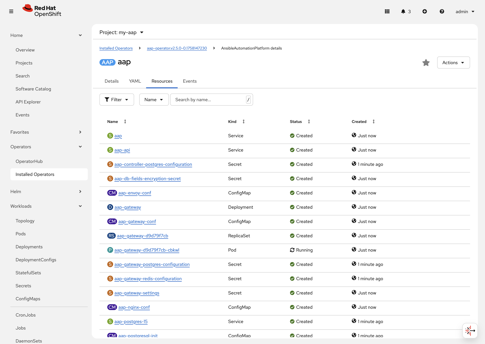
When the AnsibleAutomationPlatform custom resource is successfully deployed, the status of it and the AutomationController instance should show Conditions: Running, Successful.
This can be verified by performing the following steps:
-
Navigate to Operators on the left hand navigation → Installed Operators.
-
Next to the
Project:dropdown in the top left, ensuremy-aapis the project shown.-
Click on the
Ansible Automation Platformoperator. -
In the toolbar click on
All instances. -
Look at what is displayed in the
Statuscolumn on this page. -
When the status for both components (
aapandaap-controller) showsConditions: Running, Successful, then proceed to the next section.It will take about 10 minutes for the AAP deployment to complete.
-
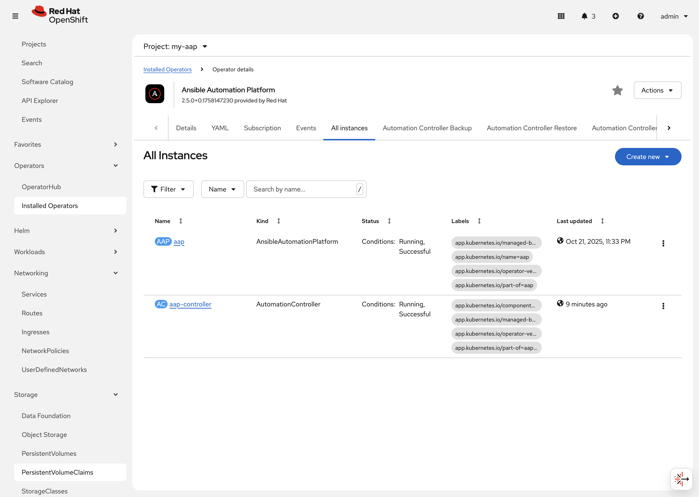
3.6: Access the deployed instance
Now that the operator is showing the AAP instance as being successfully deployed, attempt to access the newly created instance.
-
Navigate to Networking on the left hand navigation → Routes.
-
Click on the
Locationfor theaaproute.
A new browser tab will be opened to the URL resulting in the login page for Ansible Automation Platform being displayed. Enter admin and supersecret if you used the default value within the Secret you created.
You’re now logged into the newly deployed AAP instance!
Go ahead and attach a subscription to this deployment by using a service account and password and choosing any valid subscription. Your Red Hat login used for cloud.redhat.com can also be used instead of a service account and should have ample subscriptions to use.
Once complete, you will see the AAP dashboard.
| The only component of AAP that is currently deployed within this instance is Automation Controller, unlike the previous deployment we have been working with in prior exercises. |
4. Modify the existing deployment
The operator will manage the desired state of the created custom resources.
For instance, if changes are manually made to operator managed resources, like Deployments, ConfigMaps, etc, then the operator may override those changes and reapply the desired state according the the deployed AnsibleAutomationPlatform, AutomationController, etc .
Likewise, if updates are made to already deployed AnsibleAutomationPlatform, AutomationController, etc, than the operator will reconcile already deployed instances and apply the desired configuration automatically.
Let’s demonstrate this assertion by modifying the already created AnsibleAutomationPlatform custom resource to also deploy an instance of Automation Hub and observe how the AAP deployment gets updated.
-
Navigate to Operators on the left hand navigation → Installed Operators.
-
Next to the
Project:dropdown in the top left, ensuremy-aapis the project shown. -
Click on the
Ansible Automation Platformoperator. -
In the toolbar click on All instances.
-
Click on the aap named resource.
-
Click on the YAML toolbar button.
-
In the code entry field, update the
speckey to the following:Custom AAP Deployment# ... other configuration spec: admin_password_secret: my-aap-admin-secret image_pull_policy: IfNotPresent no_log: false redis_mode: standalone route_tls_termination_mechanism: Edge controller: disabled: false eda: disabled: true hub: disabled: false content: replicas: 1 file_storage_access_mode: ReadWriteMany file_storage_size: 100Gi file_storage_storage_class: ocs-external-storagecluster-cephfs gunicorn_api_workers: 1 gunicorn_content_workers: 1 worker: replicas: 1 lightspeed: disabled: true # ... other configuration
-
-
Click the Save button.
The only changes made from the originally deployed instance is the contents contained within the hub key. The status of the AnsibleAutomationPlatform custom resource will change to Status: Running while Automation Hub is deploying.
When the status of the AutomationHub custom resource named aap-hub shows Conditions: Database-Ready, Automationhub-API-Ready, Automationhub-Operator-Finished-Execution, Automationhub-Web-Ready, Automationhub-Content-Ready, Automationhub-Worker-Ready, Automationhub-Routes-Ready, the Automation Hub component of AAP should be successfully deployed.
| Automation Hub will take about 10 minutes to successfully deploy. |
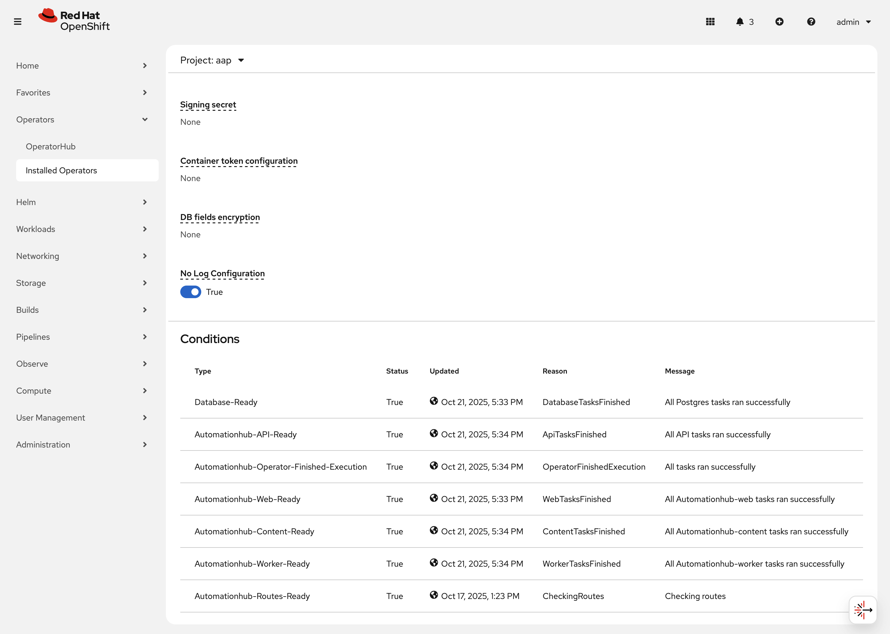
Log into the AAP instance again and see that the Automation Hub component of AAP is now deployed.
5: Modify the default AAP container group
The operator deployed AAP instance is pre-configured with a default Container Group. A container group is an instance group that points to an OpenShift cluster. In this case, the OpenShift cluster that the operator was installed on.
By default, the container group is setup to deploy job pods in the same namespace that the AnsibleAutomationPlatform custom resource was created within.
AAP allows you to edit the default container group, or create new ones, and modify the Kubernetes request that AAP makes for each job execution.
Before we modify the container group, let’s make a slight configuration change to the AAP deployment that will allow job containers to persist after running. This change allows us to observe the state of job pods after they have completed.
-
Log into the deployed AAP instance.
-
From the navigation menu on the left, expand Settings and expand Automation Execution and click on Troubleshooting.
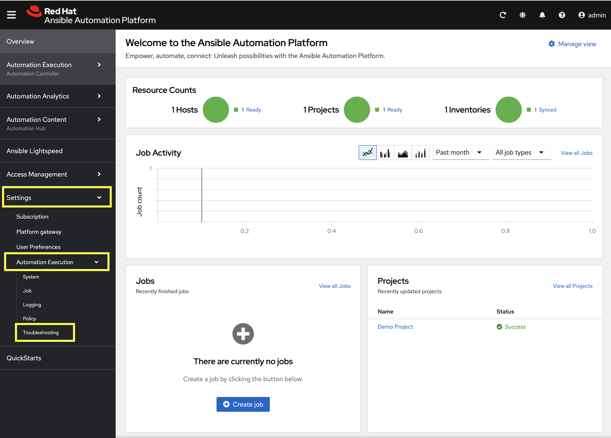
-
Click on the Edit button.
-
Uncheck the Release Receptor Work checkbox.
-
Click the Save button.
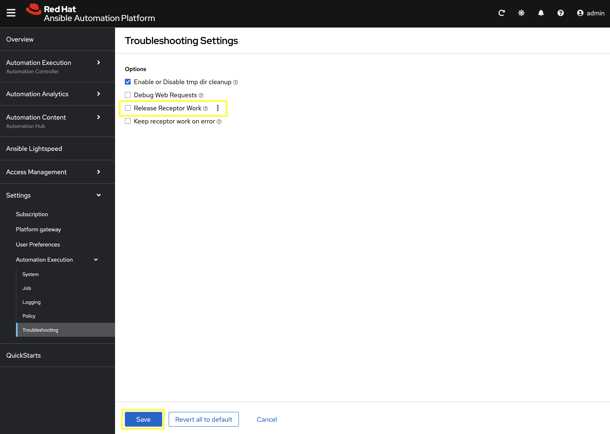
Now, perform a small modification to the to the default container group on the deployed AAP instance.
-
From the navigation menu on the left, expand Automation Execution and expand Infrastructure and click on Instance Groups.
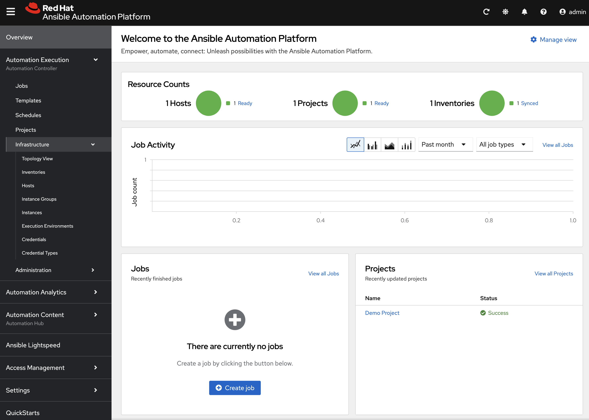
-
Click on the default container group.
-
Click the Edit container group button.
-
Check the Customize pod spec option.
A Pod spec override text box appear once the Customize pod spec option is checked with a lengthy YAML snippet. This represents spec for the Kubernetes API request that is made by AAP each time a job pod is launched.
Let’s modify the spec slightly to add a custom label to each job pod.
Edit the metadata key to appear similar to the following:
# ... other configuration
metadata:
namespace: my-aap
labels:
ansible_job: ''
my_label: foobar
# ... other configuration+ . Click the Save container group button.
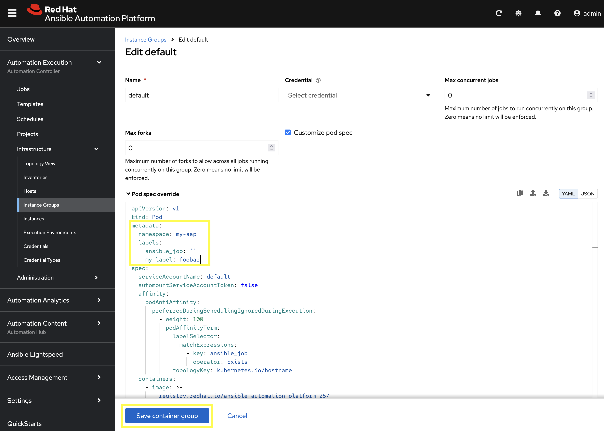
With the default instance group updated, let’s run a demo job and observe the job pod that is launched.
-
From the navigation menu on the left, expand Automation Execution and click on Templates.
-
Click on Demo Job Template.
-
Click the Launch template button (rocket icon).
-
Wait for the job to complete.
If the Job completes successfully, an OpenShift pod was launched and the ansible playbook was successfully executed within it. Normally, this pod would be terminated and removed upon success of the Job by AAP. However, because we unchecked the Release Receptor Work option previously, this pod will not be removed and will still be available for inspection as needed.
|
Let’s observe the created job pod in the OpenShift Web Console.
-
Navigate back to the OpenShift web console.
-
Navigate to Workloads on the left hand navigation → Pods.
-
Next to the
Project:dropdown in the top left, ensuremy-aapis the project shown.
-
-
In the filter text box, enter
automation-job. -
Click on the
automation-job-<id>-<guid>pod.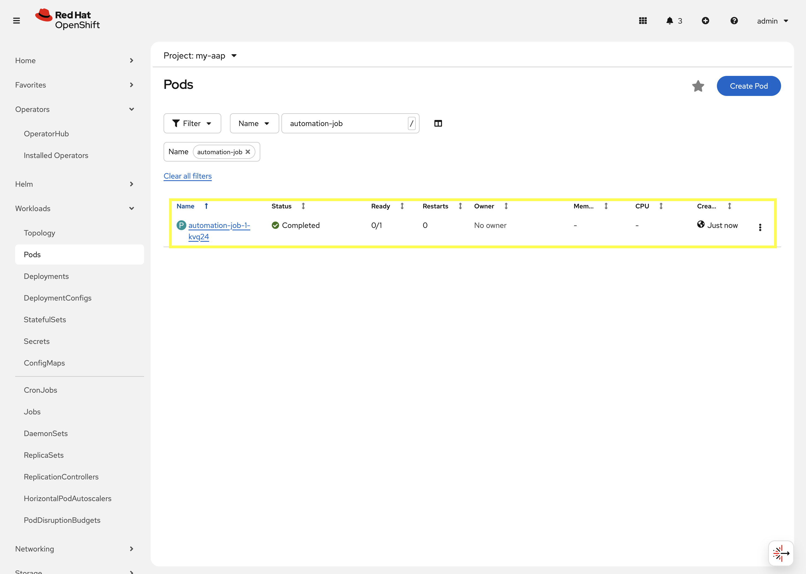
-
Observe the labels attached to this pod under
Labels.
You will see the pod has an additional label my_label=foobar as a reslt of the change we performed within the container group YAML spec.
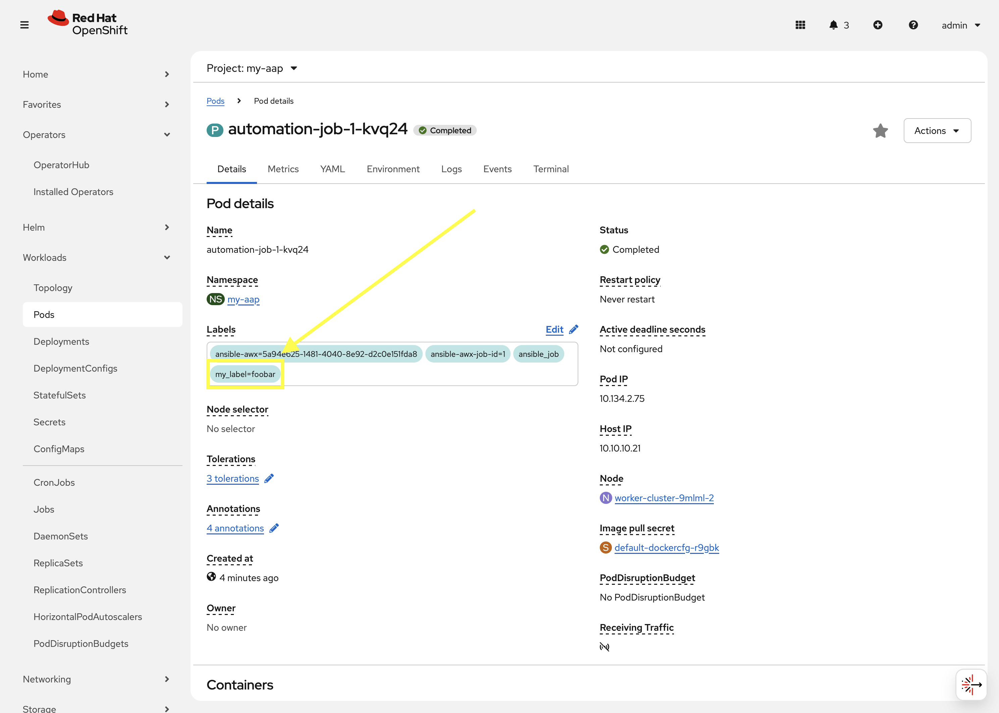
This is a very simple example of modifying the container group specification to customize the Kubernetes pod API request. More advanced examples of customizations a user may make for real-world deployments may be:
-
Launch job Pods in a separate namespace from the core AAP platform Pods.
-
Modify the resource requests and limits of job Pods.
-
Attach volume mounts to each job Pods request.
-
Edit the affinity or anti-affinity of job Pods to certain OpenShift nodes.
This demonstrates how easy and flexible Container Groups can be to manage AAP automation workloads.